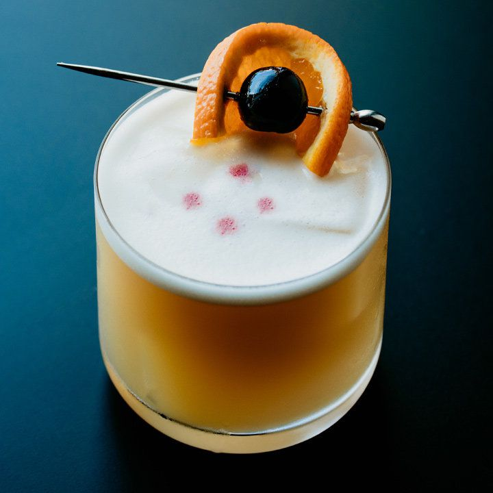

Whiskey Sour

Description
The Whiskey Sour is the perfect blend of sweet and sour.
Whiskey, lemon juice, sugar, egg white, and angostura bitters combine simply to create an impressive looking and even better tasting classic cocktail.
Ingredients:
- 2 oz bourbon whiskey
- 1 oz lemon juice
- 3/4 oz simple syrup
- 1 egg white
- 2 dashes angostura bitters
- orange wheel and/or cherry for garnish
Steps:
- Combine whiskey, lemon juice, simple syrup, and egg white in a cocktail shaker
- Shake vigorously for 10 seconds to emulsify ingredients and develop foam
- Fill shaker with ice and shake vigorously for 10 seconds
- Strain into desired glass and top with bitters and fruit garnish